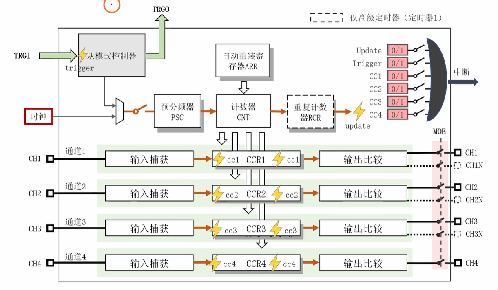
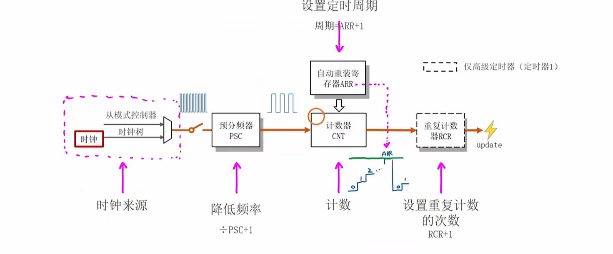
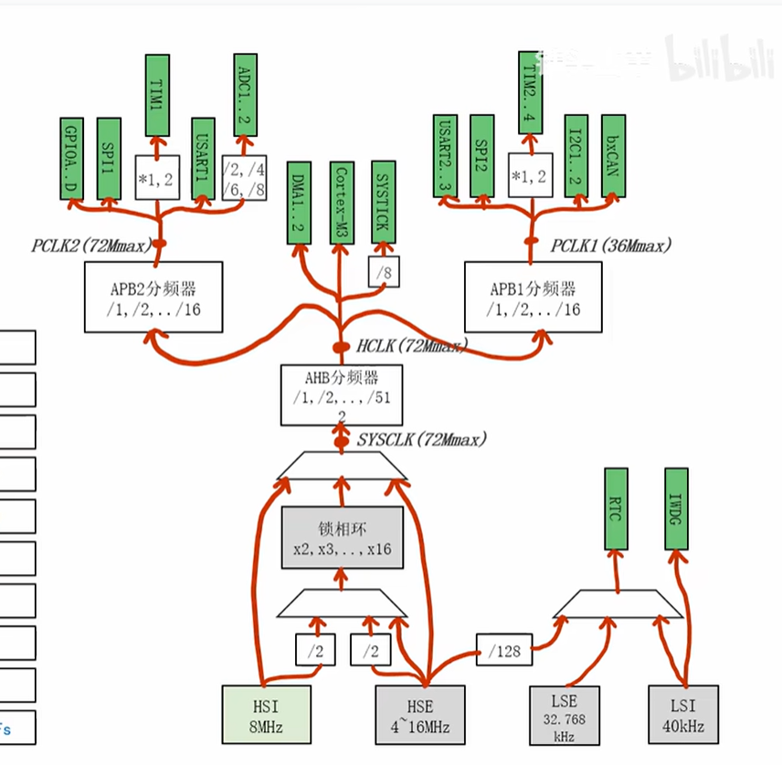
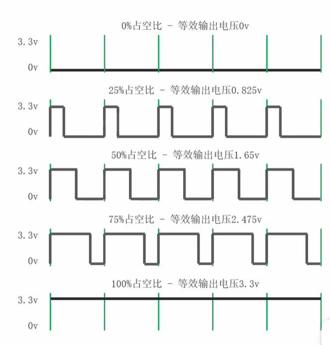

定时器
stm32定时器模块的学习笔记（基于铁头山羊STM32教程，含自主探索内容）
定时器简介
在 STM32F103C8T6 中，定时器模块是一个功能丰富且灵活的外设，主要分为 高级控制定时器、通用定时器 和 基本定时器 三类。下面简要介绍其核心特点与用途。
定时器大体结构

定时器类型
| 定时器 | 类型 | 位数 | 计数方向 | 主要特点 |
|---|---|---|---|---|
| TIM1 | 高级控制定时器 | 16位 | 递增、递减、中心对齐 | 带死区互补PWM输出、刹车输入、编码器接口、霍尔传感器接口 |
| TIM2 | 通用定时器 | 16位 | 递增、递减、中心对齐 | 4个独立通道（输入捕获/输出比较/PWM）、编码器接口、触发DAC |
| TIM3 | 通用定时器 | 16位 | 递增、递减、中心对齐 | 同TIM2，通常用于普通PWM或计时 |
| TIM4 | 通用定时器 | 16位 | 递增、递减、中心对齐 | 同TIM2，引脚分布在PB6~PB9等 |
注：STM32F103C8T6 仅包含上述定时器（无 TIM5、TIM6 等）。
- 高级控制定时器：TIM1、TIM8（仅高端系列）
- 通用定时器：TIM2、TIM3、TIM4、TIM5（部分系列）
- 基本定时器：TIM6、TIM7（无外部通道，仅作内部时钟基准）
时基单元
时基单元结构图

各组件功能
时钟来源：提供时钟信号。
- 来源一：时钟树

定时器在时钟树上的位置-
TIM1与APB2总线同步，TIM2/3/4与APB1总线同步，TIM1与APB2之间有变频器，TIM2/3/4与APB1之间有变频器。
-
变频器的倍频系数自动决定，详细规律为：当APB1或APB2的预分频器（PCLK1或PCLK2）设置为1时，倍频系数为1；当预分频器设置为大于1的值时，倍频系数为2。
-
- 来源二：从模式控制器
预分频器：给信号降低频率，实际降频系数 = PSC（设定的降频值） + 1
自动重装寄存器：设置定时周期（ARR+1）。
计数器：根据设定的周期计数，每接受一次信号计数一次，周期满后溢出重新计数。
-
计数方法：上计数、下计数、中心对齐
-
上计数（最常用）：计数器从0开始向上计数到ARR（一个周期），然后又从0开始。
-
下计数：计数器从ARR开始向下计数到0（一个周期），然后又从ARR开始。
-
中心对齐：
-
上计数对齐：计数器从0开始向上计数到ARR（一个周期），然后又从ARR开始向下计数到0（一个周期），再从0开始。
-
下计数对齐：计数器从ARR开始向下计数到0（一个周期），然后又从0开始向上计数到ARR（一个周期），再从ARR开始。
-
双边对齐：计数器从0开始向上计数到ARR（一个周期），然后又从ARR开始向下计数到0（一个周期），再从0开始向上计数到ARR（一个周期），再从ARR开始。
-
-
时钟分割：设置时钟分割系数，
- 只有高级定时器才需要配置，通常设置为0（不分割）。
重复计数器：设置重复计数次数（周期数），次数满后update一次。
预加载功能
预加载功能的概念

在 STM32 的定时器中，ARR、PSC、CCR 等寄存器通常都带有“影子寄存器”和“活动寄存器”两层机制。写入这些寄存器时，实际写入的是影子寄存器；只有在特定的更新事件发生后，影子寄存器中的值才会被复制到活动寄存器中，从而真正影响计数器的工作过程。
-
影子寄存器：用于缓存即将生效的参数，避免在计数过程中频繁修改导致计数行为异常。
-
活动寄存器：真正参与计数器运算的寄存器，当前计数过程实际使用的是它。
作用
-
避免在计数过程中频繁修改 ARR、PSC、CCR 等寄存器，从而导致周期异常或波形不稳定。
-
让参数更新更安全，尤其适合在定时器运行期间调整周期、分频或占空比时使用。
例如，定时器正在运行时，如果当前 ARR 已经被设置为 5，计数值为 4，此时突然把 ARR 改为 3，就可能导致计数行为出现异常跳变。使用预加载机制后，新的参数会在下一个更新事件时才真正生效，因此能够保证计数过程的连续性与稳定性。
开启策略（STM32F103C8T6）
-
ARR和CCR的预加载功能默认关闭。
-
PSC和RCR的预加载机制默认开启，也常被配置使用，具体行为以实际寄存器和库函数设置为准。
-
当追求波形稳定时，建议开启预加载；当更看重响应速度，并且对短时间内参数切换的平滑性要求较低时，可以适当关闭。
配置函数
-
void ARRPreloadConfig(TIM_TypeDef* TIMx, FunctionalState NewState)-
作用：使能或失能指定定时器的自动重装寄存器预加载功能。
-
参数：
-
TIMx：指定要操作的定时器（如 TIM1、TIM2 等）。
-
NewState：新的状态，可取
ENABLE或DISABLE。
-
-
-
void TIM_PSCPreloadConfig(TIM_TypeDef* TIMx, FunctionalState NewState)-
作用：使能或失能指定定时器的预分频器预加载功能。
-
参数：
-
TIMx：指定要操作的定时器（如 TIM1、TIM2 等）。
-
NewState：新的状态，可取
ENABLE或DISABLE。
-
-
-
void TIM_OCxPreloadConfig(TIM_TypeDef* TIMx, FunctionalState NewState)-
作用：使能或失能指定定时器的通道x输出比较寄存器预加载功能。
-
参数：
-
TIMx：指定要操作的定时器（如 TIM1、TIM2 等）。
-
NewState：新的状态，可取
ENABLE或DISABLE。
-
-
-
void TIM_CCPreloadControl(TIM_TypeDef* TIMx, FunctionalState NewState)-
作用：使能或失能指定定时器的所有通道输出比较寄存器预加载功能
-
参数：
-
TIMx：指定要操作的定时器（如 TIM1、TIM2 等）。
-
NewState：新的状态，可取
ENABLE或DISABLE。
-
-
配置函数
void TIM_TimeBaseInit(TIM_TypeDef* TIMx, TIM_TimeBaseInitTypeDef* TIM_TimeBaseInitStruct)
-
作用：初始化定时器的时基单元，设置预分频器、自动重装寄存器、计数模式等参数。
-
参数：
-
TIMx：指定要初始化的定时器（如TIM1、TIM2等）。
-
TIM_TimeBaseInitStruct：指向一个结构体，结构体成员：
-
TIM_Prescaler：预分频器的值，决定了定时器计数的频率，可以取任意非负整数，实际分频系数为TIM_Prescaler + 1。 -
TIM_CounterMode：计数模式（上计数、下计数、中心对齐），可以取TIM_CounterMode_Up（上计数）、TIM_CounterMode_Down（下计数）、TIM_CounterMode_CenterAligned1（中心对齐模式1）等。 -
TIM_Period：自动重装寄存器的值，决定了定时器的周期，可以取任意非负整数，实际周期为TIM_Period + 1。 -
TIM_RepetitionCounter：重复计数器的值，决定了周期数，可以取任意非负整数，实际周期数为TIM_RepetitionCounter + 1。 -
TIM_ClockDivision（只有高级计数器才需要配置）：时钟分割，可以取TIM_CKD_DIV1（不分割）、TIM_CKD_DIV2（分割2）与TIM_CKD_DIV4（分割4），通常设置为0（TIM_CKD_DIV1）（不分割）。
-
-
void TIM_Cmd(TIM_TypeDef* TIMx, FunctionalState NewState)
-
作用：使能或失能指定的定时器。（打开或闭合时基单元的开关）
-
参数：
-
TIMx：指定要操作的定时器（如TIM1、TIM2等）。
-
NewState：新的状态，可以取
ENABLE（使能）或DISABLE（失能）。
-
void TIM_ITConfig(TIM_TypeDef* TIMx, uint16_t TIM_IT, FunctionalState NewState)
-
作用：使能或失能指定定时器的中断。
-
参数：
-
TIMx：指定要操作的定时器（如TIM1、TIM2等）。
-
TIM_IT：指定要配置的中断，可以取
TIM_IT_Update（更新中断）、TIM_IT_CC1（捕获/比较1中断）等。 -
NewState：新的状态，可以取
ENABLE（使能）或DISABLE（失能）。
-
状态
FlagStatus TIM_GetFlagStatus(TIM_TypeDef* TIMx, uint32_t TIM_FLAG)
-
作用：查询指定定时器的标志位状态。
-
参数：
-
TIMx：指定要查询的定时器（如TIM1、TIM2等）。
-
TIM_FLAG：指定要查询的标志位，可以取
TIM_FLAG_Update（更新标志）、TIM_FLAG_CC1（捕获/比较1标志）等。
-
-
返回值：
SET（标志位被置位）或RESET（标志位未被置位）。
void TIM_ClearFlag(TIM_TypeDef* TIMx, uint32_t TIM_FLAG)
-
作用：清除指定定时器的标志位。
-
参数：
- TIMx：指定要操作的定时器（如TIM1、TIM2等）。
- TIM_FLAG：指定要清
除的标志位，可以取TIM_FLAG_Update（更新标志）、TIM_FLAG_CC1（捕获/比较1标志）等。
ITStatus TIM_GetITStatus(TIM_TypeDef* TIMx, uint16_t TIM_IT)
-
作用：查询指定定时器的中断状态。
-
参数：
-
TIMx：指定要查询的定时器（如TIM1、TIM2等）。
-
TIM_IT：指定要查询的中断，可以取
TIM_IT_Update（更新中断）、TIM_IT_CC1（捕获/比较1中断）等。
-
-
返回值：
SET（中断被触发）或RESET（中断未被触发）。
flagstatus与itstatus的区别：flagstatus是标志位状态，itstatus是中断状态。标志位状态是指定时器的某个标志位是否被置位，而中断状态是指定时器的某个中断是否被触发。通常情况下，当标志位被置位时，中断也会被触发，但也有例外情况，比如当中断被屏蔽时，标志位可能被置位，但中断不会被触发。
void TIM_ClearITPendingBit(TIM_TypeDef* TIMx, uint16_t TIM_IT)
- 作用：清除指定定时器的中断挂起位。
- 参数：
-
TIMx：指定要操作的定时器（如TIM1、TIM2等）。
-
TIM_IT：指定要清除的中断，可以取
TIM_IT_Update（更新中断）、TIM_IT_CC1（捕获/比较1中断）等。
-
中断挂起位是指定时器的某个中断是否被触发，但还没有被处理。通常情况下，当中断被触发时，中断挂起位会被置位，但中断处理程序还没有执行完毕，此时中断挂起位仍然被置位。当中断处理程序执行完毕后，中断挂起位会被清除。
示例：利用定时器自制延时函数
1 |
|
输出比较
简介
定时器通道
-
如图所示，定时器模块通常包含多个通道（Channel），每个通道可以独立配置为输入捕获、输出比较或PWM模式。以 TIM2 为例，它有四个通道：通道1、通道2、通道3和通道4。
-
内部结构：
-
每个通道都有一个独立的比较寄存器CCRX（X可以是1、2、3或4）。
-
比较寄存器前是输入捕获寄存器ICRX（X可以是1、2、3或4），用于测量外部输入信号的时间参数（例如周期、占空比等）。
-
比较寄存器后是输出比较寄存器OCX（X可以是1、2、3或4），用于生成定时器输出信号（精准定时的方波信号）。
-
输出比较原理
通过设置比较寄存器的值，当计数器的值与比较寄存器的值相等时，定时器会触发一个事件（例如改变输出引脚的状态），从而实现精确的时间控制。这种机制可以用于生成定时信号、PWM波形等。
PWM（Pulse Width Modulation）（脉冲宽度调制）
定义
PWM是一种周期性信号，其频率固定，但高电平持续时间（占空比）可调。通过改变占空比，可以调节信号的输出幅度，实现对电机速度、LED亮度等的控制。

具体方法

如图所示，将ARR设定为9，则计数器从0计数到9，形成一个周期为10的PWM信号。通过调整比较寄存器的值（例如设置为3），计数达到3时，改变输出引脚的电平状态，从而实现不同的占空比。
输出比较的工作模式

-
选择的模式不同，输出的OCxRef（含义见图中）值也不同
-
八种输出比较模式

- 注:
-
PWM模式1实际是在CNT<=CCRx时输出有效电平，如果设置为高电平有效，则在CNT<=CCRx的值时，输出为高电平；当CNT>CCRx时，输出为低电平。反之亦然。
-
PWM模式2实际是在CNT>CCRx时输出有效电平，如果设置为高电平有效，则在CNT>CCRx的值时，输出为高电平；当CNT<=CCRx时，输出为低电平。反之亦然。
-
PWM模式1最常用，其他模式较少使用，主要用于特殊场景。
-
互补输出
- 由定时器整体结构图，输出比较模块有CHx和CHxN两个输出端口，分别对应主输出和互补输出。具体结构如图

-
主输出：OCxRef的电平与输出引脚的电平状态一致，输出为主输出。
-
互补输出：OCxRef信号经过一个反向器，OCxRef电平与输出引脚的电平状态相反，输出为互补输出。
-
作用：在驱动电机或功率开关器件中，通过互补输出，可以实现高低侧开关的交替控制，从而提高效率并减少功耗。（如下图）

-
互补输出只有 高级定时器(如TIM1) 才支持，通用定时器（如TIM2、TIM3、TIM4）不支持互补输出。
极性选择

-
如图，无论是主输出还是互补输出，都有两路极性选择，一路会经过反向器，另一路不经过反向器。经过反向器后，输出信号与OCxRef的电平状态相反。
-
通过选择不同的极性，可以实现高电平有效或低电平有效的输出信号，从而满足不同的应用需求。
配置函数
void TIM_OCxInit(TIM_TypeDef* TIMx, TIM_OCInitTypeDef* TIM_OCInitStruct)
- 作用：初始化定时器的输出比较模块，设置比较寄存器、输出模式、极性等参数。
- 参数：
-
TIMx：指定要初始化的定时器（如TIM1、TIM2等）。
-
TIM_OCInitStruct：指向一个结构体，结构体成员：
-
TIM_OCMode：输出比较模式，可以取TIM_OCMode_Timing（定时模式）、TIM_OCMode_Active（主动模式）、TIM_OCMode_Inactive（非主动模式）、TIM_OCMode_Toggle（翻转模式）、TIM_OCMode_PWM1（PWM模式1）、TIM_OCMode_PWM2（PWM模式2）等。 -
TIM_OutputState：输出状态，可以取TIM_OutputState_Enable（使能输出）或TIM_OutputState_Disable（失能输出）。 -
TIM_OutputNState（只有高级计数器才需要配置）：互补输出状态，可以取TIM_OutputNState_Enable（使能互补输出）或TIM_OutputNState_Disable（失能互补输出）。 -
TIM_Pulse：比较寄存器的值，决定了输出信号的占空比，可以取任意非负整数，实际占空比为**(TIM_Pulse + 1) / (ARR + 1)**。 -
TIM_OCPolarity：输出极性，可以取TIM_OCPolarity_High（高电平有效）或TIM_OCPolarity_Low（低电平有效）。 -
TIM_OCNPolarity（只有高级计数器才需要配置）：互补输出极性，可以取TIM_OCNPolarity_High（高电平有效）或TIM_OCNPolarity_Low（低电平有效）。
-
-
注：函数名中OCx与实际使用的通道有关，x需与通道编号一致。
void TIM_CtrlPWMOutputs(TIM_TypeDef* TIMx, FunctionalState NewState)
-
作用：用于控制指定定时器的 PWM 输出是否开启。
-
参数：
- TIMx：指定要操作的定时器（如 TIM1、TIM2 等）。
- NewState：新的状态，可以取
ENABLE（使能）或DISABLE（失能）。
-
说明：
-
该函数本质上是 PWM 输出的总开关，主要用于在配置完成后打开输出，或在调试、初始化或切换模式时暂时关闭输出。
-
它不会直接设置占空比、极性或输出模式，通常需要与
TIM_OCInit等初始化函数配合使用。 -
对于高级定时器来说，该函数还常用于控制主输出和互补输出是否真正向外发送 PWM 波形。
-
工程示例：PWM实现LED呼吸灯
实现效果
两颗LED灯交替亮灭，亮度呈现呼吸灯效果，即亮度逐渐增强到最大值，然后逐渐减弱到最小值，形成一个完整的呼吸周期。且两颗LED亮度变化的相位差为180°，即一颗LED亮度增强时，另一颗LED亮度减弱。
呼吸灯工作原理
-
LED灯亮度呈现正弦函数变化，例如函数,形成一个完整的呼吸周期。
-
由于输出引脚的电平只有高和低，通过改变PWM信号的占空比，可以实现LED亮度的平滑过渡。
-
配置目的：配置PWM输出模式，设置比较寄存器的值，使得PWM信号的占空比每1ms变化一次，视觉上实现亮度稳定变化效果，从而实现LED呼吸灯效果。
电路连接
使用TIM1的通道的主输出和互补输出分别控制两颗LED灯，连接方式如下：
graph LR
TIM1_CH1 -->|PA8| LED1 --> 电阻 --> GND
TIM1_CH1N -->|PB13| LED2 --> 电阻 --> GND
主函数
1 |